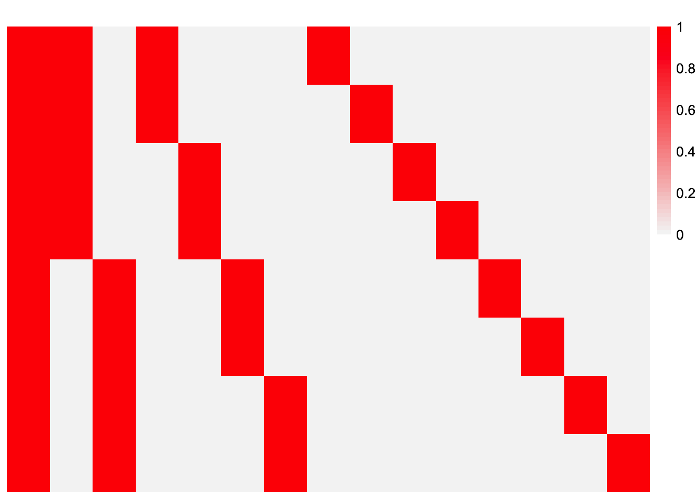
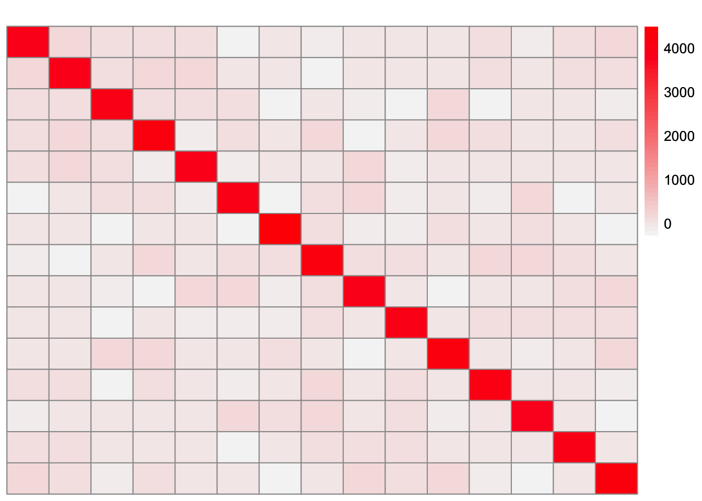
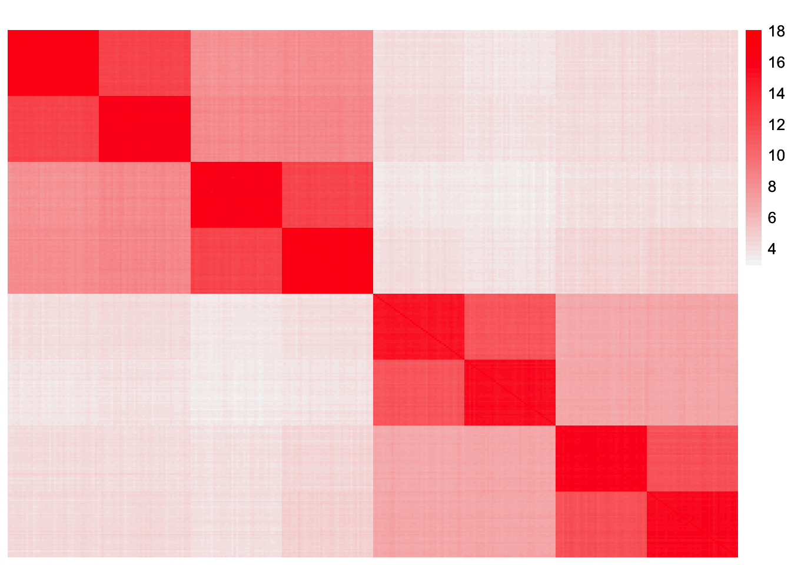
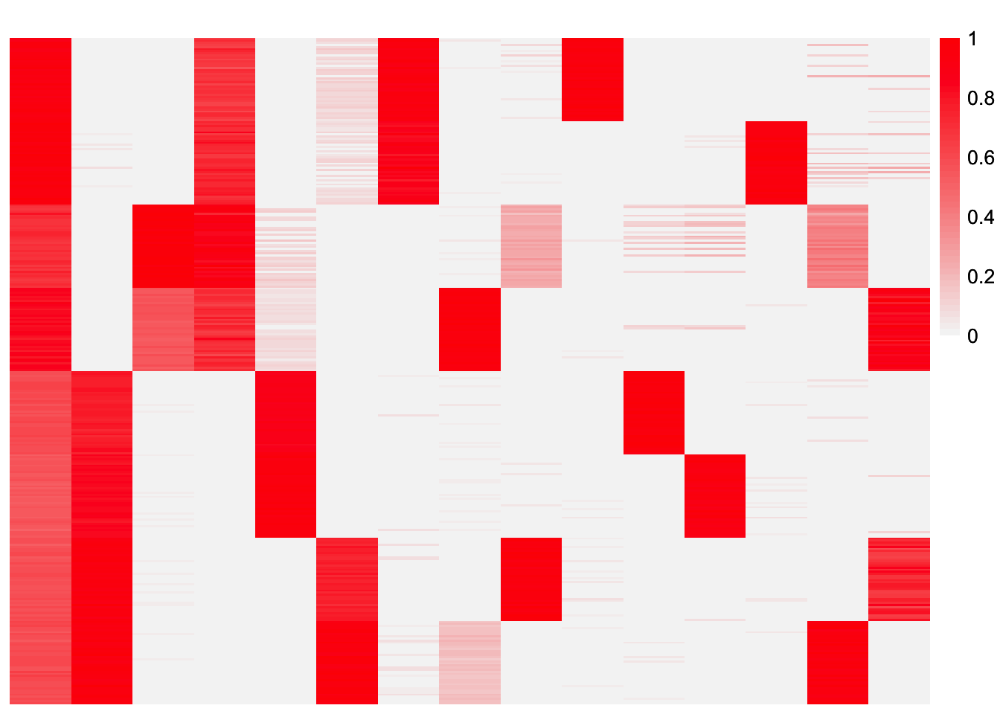
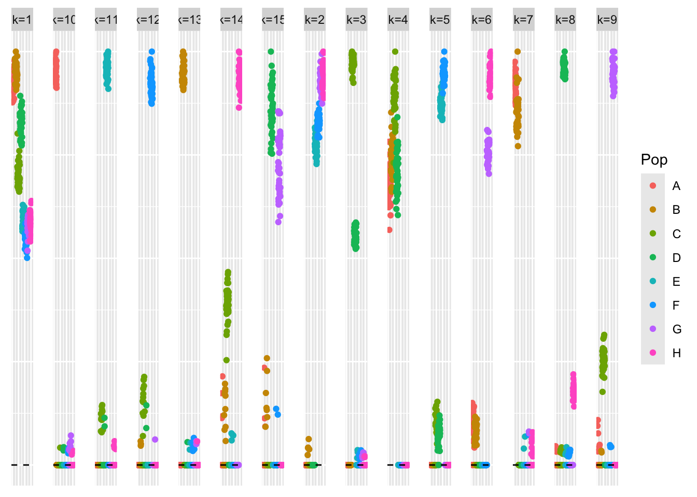
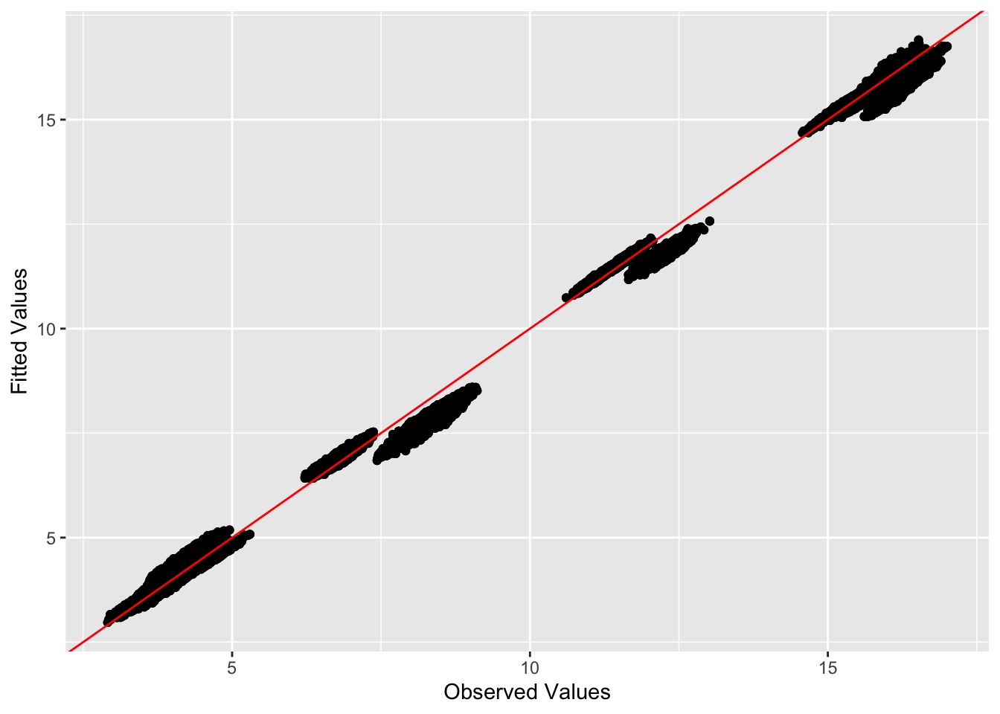

Last updated: 2025-04-08
Checks: 7 0
Knit directory: EBCD_GBCD_comparison/
This reproducible R Markdown analysis was created with workflowr (version 1.7.1). The Checks tab describes the reproducibility checks that were applied when the results were created. The Past versions tab lists the development history.
Great! Since the R Markdown file has been committed to the Git repository, you know the exact version of the code that produced these results.
Great job! The global environment was empty. Objects defined in the global environment can affect the analysis in your R Markdown file in unknown ways. For reproduciblity it’s best to always run the code in an empty environment.
The command set.seed(20240229) was run prior to running
the code in the R Markdown file. Setting a seed ensures that any results
that rely on randomness, e.g. subsampling or permutations, are
reproducible.
Great job! Recording the operating system, R version, and package versions is critical for reproducibility.
Nice! There were no cached chunks for this analysis, so you can be confident that you successfully produced the results during this run.
Great job! Using relative paths to the files within your workflowr project makes it easier to run your code on other machines.
Great! You are using Git for version control. Tracking code development and connecting the code version to the results is critical for reproducibility.
The results in this page were generated with repository version be4fad7. See the Past versions tab to see a history of the changes made to the R Markdown and HTML files.
Note that you need to be careful to ensure that all relevant files for
the analysis have been committed to Git prior to generating the results
(you can use wflow_publish or
wflow_git_commit). workflowr only checks the R Markdown
file, but you know if there are other scripts or data files that it
depends on. Below is the status of the Git repository when the results
were generated:
Ignored files:
Ignored: .DS_Store
Ignored: .Rhistory
Ignored: code/.DS_Store
Ignored: data/.DS_Store
Untracked files:
Untracked: analysis/ebcd-tree-experiments.Rmd
Untracked: analysis/gbcd-overlapping-binary.Rmd
Untracked: analysis/honeypots_analysis.Rmd
Untracked: analysis/star-simulations.Rmd
Unstaged changes:
Modified: analysis/driftr-comparison.Rmd
Modified: code/drift_functions.R
Note that any generated files, e.g. HTML, png, CSS, etc., are not included in this status report because it is ok for generated content to have uncommitted changes.
These are the previous versions of the repository in which changes were
made to the R Markdown (analysis/gbcd-tree-experiments.Rmd)
and HTML (docs/gbcd-tree-experiments.html) files. If you’ve
configured a remote Git repository (see ?wflow_git_remote),
click on the hyperlinks in the table below to view the files as they
were in that past version.
| File | Version | Author | Date | Message |
|---|---|---|---|---|
| Rmd | be4fad7 | Annie Xie | 2025-04-08 | Add analysis of gbcd in tree setting |
In this analysis, I want to try applying GBCD to tree-structured data
library(ggplot2)
library(cowplot)
library(RColorBrewer)
library(ggrepel)
library(pheatmap)
library(gridExtra)
#library(Seurat)
library(Matrix)
library(ebnm)
library(flashier)
library(magrittr)
library(ashr)
library(irlba)
library(reshape2)
library(patchwork)
library(fastTopics)source("code/gbcd_functions.R")plot_heatmap <- function(L, title = "", colors_range = c("gray96", "red"), brks = NULL){
### define the color map
cols <- colorRampPalette(colors_range)(49)
if (is.null(brks) == TRUE){
brks <- seq(min(L), max(L), length=50)
}
plt <- pheatmap(L, show_rownames = FALSE, show_colnames = FALSE, cluster_rows = FALSE, cluster_cols = FALSE, color = cols, breaks = brks, main = title)
return(plt)
}#adapted from code used in Jason's thesis
plot_loadings <- function(L_est, Pop){
n <- nrow(L_est)
k <- ncol(L_est)
Idx <- rep(c(1:n), k)
Loading <- c(L_est)
Factor <- paste0('k=',c(sapply(c(1:k), function(x, n){rep(x, n)}, n = n)))
tib <- data.frame(Idx, Loading, Factor, Pop)
plt <- ggplot(tib, aes(x = Idx, y = Loading, col = Pop)) +
geom_point() +
geom_hline(yintercept = 0, linetype = "dashed") +
facet_grid(cols = vars(Factor)) +
theme(axis.title.x = element_blank(),
axis.title.y = element_blank(),
axis.ticks.x = element_blank(),
axis.ticks.y = element_blank(),
axis.text.x = element_blank(),
axis.text.y = element_blank(),
panel.spacing = unit(1, "lines"))
plot(plt)
}sim_8pops <- function(pop_sizes,
branch_sds,
indiv_sd,
n_genes = 1000,
constrain_F = FALSE,
seed = 666) {
set.seed(seed)
n <- sum(pop_sizes)
p <- n_genes
num_pops <- length(pop_sizes)
K <- length(branch_sds)
FF <- matrix(rnorm(K * p, sd = rep(branch_sds, each = p)), ncol = K)
if (constrain_F) {
FF_svd <- svd(FF)
FF <- FF_svd$u
FF <- t(t(FF) * branch_sds * sqrt(p))
}
LL <- matrix(0, nrow = n, ncol = K)
LL[, 1] <- 1
LL[, 2] <- rep(c(1,1,1,1,0,0,0,0), times = pop_sizes)
LL[, 3] <- rep(c(0,0,0,0,1,1,1,1), times = pop_sizes)
LL[, 4] <- rep(c(1,1,0,0,0,0,0,0), times = pop_sizes)
LL[, 5] <- rep(c(0,0,1,1,0,0,0,0), times = pop_sizes)
LL[, 6] <- rep(c(0,0,0,0,1,1,0,0), times = pop_sizes)
LL[, 7] <- rep(c(0,0,0,0,0,0,1,1), times = pop_sizes)
LL[, 8] <- rep(c(1,rep(0,7)), times = pop_sizes)
LL[, 9] <- rep(c(0,1,rep(0,6)), times = pop_sizes)
LL[, 10] <- rep(c(0,0,1,rep(0,5)), times = pop_sizes)
LL[, 11] <- rep(c(0,0,0,1,rep(0,4)), times = pop_sizes)
LL[, 12] <- rep(c(rep(0,4),1,0,0,0), times = pop_sizes)
LL[, 13] <- rep(c(rep(0,5),1,0,0), times = pop_sizes)
LL[ ,14] <- rep(c(rep(0,6),1,0), times = pop_sizes)
LL[, 15] <- rep(c(rep(0,7), 1), times = pop_sizes)
E <- matrix(rnorm(n * p, sd = indiv_sd), nrow = n)
pops <- rep(LETTERS[1:length(pop_sizes)], times = pop_sizes)
return(list(Y = LL %*% t(FF) + E, LL = LL, FF = FF, pops = pops))
}#seed = 666
sim_data_8pop <- sim_8pops(pop_sizes = rep(40, 8),
branch_sds = rep(2, 15),
indiv_sd = 1,
n_genes = 1000,
constrain_F = FALSE,
seed = 4921)This is a heatmap of the loadings matrix, \(L\):
plot_heatmap(sim_data_8pop$LL)
This is a heatmap of \(F^{T}F\):
plot_heatmap(crossprod(sim_data_8pop$FF))
observed.vals1 <- tcrossprod(sim_data_8pop$Y)/ ncol(sim_data_8pop$Y)This is a heatmap of the Gram matrix, \(XX^{T}/p\):
plot_heatmap(observed.vals1)
gbcd_fit1 <- ax_fit_gbcd(Y = sim_data_8pop$Y, Kmax = 15)[1] "Form cell by cell covariance matrix..."
user system elapsed
0.025 0.000 0.026
[1] "Initialize GEP membership matrix L..."
Adding factor 1 to flash object...
Wrapping up...
Done.
Adding factor 2 to flash object...
Adding factor 3 to flash object...
Adding factor 4 to flash object...
Adding factor 5 to flash object...
Adding factor 6 to flash object...
Adding factor 7 to flash object...
Adding factor 8 to flash object...
Adding factor 9 to flash object...
Factor doesn't significantly increase objective and won't be added.
Wrapping up...
Done.
Backfitting 8 factors (tolerance: 1.53e-03)...
Difference between iterations is within 1.0e+05...
Difference between iterations is within 1.0e+04...
Difference between iterations is within 1.0e+03...
Difference between iterations is within 1.0e+02...
Difference between iterations is within 1.0e+01...
Difference between iterations is within 1.0e+00...
--Maximum number of iterations reached!
Wrapping up...
Done.
Backfitting 8 factors (tolerance: 1.53e-03)...
Difference between iterations is within 1.0e+03...
Difference between iterations is within 1.0e+02...
Difference between iterations is within 1.0e+01...
Difference between iterations is within 1.0e+00...
Difference between iterations is within 1.0e-01...
Difference between iterations is within 1.0e-02...
--Maximum number of iterations reached!
Wrapping up...
Done.
Backfitting 8 factors (tolerance: 1.53e-03)...
Difference between iterations is within 1.0e+01...
Difference between iterations is within 1.0e+00...
Difference between iterations is within 1.0e-01...
Difference between iterations is within 1.0e-02...
Difference between iterations is within 1.0e-03...
Wrapping up...
Done.
user system elapsed
23.990 0.545 24.632
[1] "Estimate GEP membership matrix L..."
Backfitting 15 factors (tolerance: 1.53e-03)...
Difference between iterations is within 1.0e+04...
Difference between iterations is within 1.0e+03...
Difference between iterations is within 1.0e+02...
--Maximum number of iterations reached!
Wrapping up...
Done.
Backfitting 15 factors (tolerance: 1.53e-03)...
Difference between iterations is within 1.0e+02...
Difference between iterations is within 1.0e+01...
Difference between iterations is within 1.0e+00...
--Maximum number of iterations reached!
Wrapping up...
Done.
Backfitting 15 factors (tolerance: 1.53e-03)...
Difference between iterations is within 1.0e+00...
--Maximum number of iterations reached!
Wrapping up...
Done.
user system elapsed
38.826 0.589 40.177
[1] "Estimate GEP signature matrix F..."
Backfitting 15 factors (tolerance: 4.77e-03)...
Difference between iterations is within 1.0e+01...
--Estimate of factor 15 is numerically zero!
Difference between iterations is within 1.0e+00...
--Estimate of factor 4 is numerically zero!
--Estimate of factor 7 is numerically zero!
--Maximum number of iterations reached!
Wrapping up...
Done.
user system elapsed
45.439 0.833 46.520 This is a heatmap of the estimate of \(L\), \(\hat{L}\):
plot_heatmap(gbcd_fit1$res$L)
This is a scatter plot of the entries of \(\hat{L}\), separated by factor:
plot_loadings(gbcd_fit1$res$L, sim_data_8pop$pops)
cor(sim_data_8pop$LL, gbcd_fit1$res$L)Warning in cor(sim_data_8pop$LL, gbcd_fit1$res$L): the standard deviation is
zero Baseline GEP1 GEP2 GEP3 GEP4 GEP5
[1,] NA NA NA NA NA NA
[2,] 0.88028826 -0.9932509 0.5459539 0.9850845 -0.5433015 -0.5347737
[3,] -0.88028826 0.9932509 -0.5459539 -0.9850845 0.5433015 0.5347737
[4,] 0.82879080 -0.5717330 -0.3214264 0.5016189 -0.3668623 -0.2489319
[5,] 0.18767853 -0.5751744 0.9518397 0.6358588 -0.2604882 -0.3685716
[6,] -0.53383138 0.4876926 -0.3144931 -0.5687388 0.9942128 -0.3685716
[7,] -0.48263794 0.6592148 -0.3159202 -0.5687388 -0.3668623 0.9860751
[8,] 0.51226237 -0.3765400 -0.2104229 0.2970945 -0.2401677 -0.1462173
[9,] 0.57287951 -0.3720343 -0.2104229 0.3596787 -0.2401677 -0.1797111
[10,] -0.03089887 -0.3765400 0.8537559 0.5051192 -0.1700239 -0.2412868
[11,] 0.27662775 -0.3765400 0.3924947 0.3274153 -0.1710353 -0.2412868
[12,] -0.29099654 0.2968258 -0.2072100 -0.3723270 0.6154970 -0.2412868
[13,] -0.40795281 0.3417137 -0.2045581 -0.3723270 0.6862331 -0.2412868
[14,] -0.33176305 0.4279789 -0.2048755 -0.3723270 -0.2401677 0.5505321
[15,] -0.30015836 0.4351359 -0.2087612 -0.3723270 -0.2401677 0.7405434
GEP6 GEP7 GEP8 GEP9 GEP10 GEP11
[1,] NA NA NA NA NA NA
[2,] 0.5702880 0.31122929 -0.27476009 0.3741924 -0.3644349 -0.3528493
[3,] -0.5702880 -0.31122929 0.27476009 -0.3741924 0.3644349 0.3528493
[4,] 0.9972487 -0.26319403 -0.26871631 0.6518988 -0.2297382 -0.2311670
[5,] -0.3387368 0.62257066 -0.04854932 -0.2198186 -0.1910749 -0.1762682
[6,] -0.3353407 -0.25591915 -0.27816922 -0.2202171 0.6463606 0.6408130
[7,] -0.3231711 -0.10345748 0.59543485 -0.2118631 -0.2255475 -0.2333778
[8,] 0.6871289 -0.17159105 -0.16963550 0.9992504 -0.1503990 -0.1537379
[9,] 0.6185761 -0.17301083 -0.18219674 -0.1457145 -0.1503990 -0.1489307
[10,] -0.2217553 -0.16771837 0.12058588 -0.1444530 -0.1059724 -0.0842888
[11,] -0.2217553 0.98285471 -0.18415186 -0.1433572 -0.1442034 -0.1465005
[12,] -0.2190979 -0.16804526 -0.18415186 -0.1457145 0.9966837 -0.1537379
[13,] -0.2199661 -0.16703156 -0.18005714 -0.1426173 -0.1503990 0.9927591
[14,] -0.2159477 -0.17393125 0.96375908 -0.1334562 -0.1503990 -0.1518253
[15,] -0.2071826 0.03847361 -0.18415186 -0.1439377 -0.1449120 -0.1537379
GEP12 GEP13 GEP14
[1,] NA NA NA
[2,] 0.3733691 -0.1982243 0.06196061
[3,] -0.3733691 0.1982243 -0.06196061
[4,] 0.6520384 -0.2699943 -0.30869305
[5,] -0.2209088 0.0411046 0.38023900
[6,] -0.2127602 -0.3094577 -0.33618030
[7,] -0.2183694 0.5383474 0.26463435
[8,] -0.1454560 -0.1882532 -0.21158695
[9,] 0.9991746 -0.1652523 -0.19258713
[10,] -0.1454560 0.2605962 -0.22358767
[11,] -0.1437816 -0.2067776 0.72143738
[12,] -0.1427081 -0.1983977 -0.22358766
[13,] -0.1358603 -0.2067776 -0.21657567
[14,] -0.1421829 -0.2067776 0.57007537
[15,] -0.1437297 0.9116398 -0.22358767gbcd.fitted.vals1 <- tcrossprod(gbcd_fit1$scaled_L)This is the L2 norm of the difference between the observed values and the fitted values.
sum((observed.vals1 - gbcd.fitted.vals1)^2)[1] 8019.205This is the L2 norm of the difference between the off-diagonal entries of the observed values and fitted values.
sum((observed.vals1 - gbcd.fitted.vals1)^2) - sum((diag(observed.vals1) - diag(gbcd.fitted.vals1))^2)[1] 7610.29This is a plot of the off-diagonal entries of the fitted values vs. observed values:
diag_idx <- seq(1, prod(dim(observed.vals1)), length.out = ncol(observed.vals1))
off_diag_idx <- setdiff(c(1:prod(dim(observed.vals1))), diag_idx) ggplot(data = NULL, aes(x = c(as.matrix(observed.vals1))[off_diag_idx], y = c(gbcd.fitted.vals1)[off_diag_idx])) + geom_point() + xlab('Observed Values') + ylab('Fitted Values') + geom_abline(slope = 1, intercept = 0, color = 'red')
GBCD struggles in this 8 population setting. GBCD fails to find all of the population effects. Furthermore, there are some factors where populations from different branches are grouped together. My guess is there is an identifiability issue with the tree data. We saw this in the 4 population case.
sessionInfo()R version 4.3.2 (2023-10-31)
Platform: aarch64-apple-darwin20 (64-bit)
Running under: macOS Sonoma 14.4.1
Matrix products: default
BLAS: /Library/Frameworks/R.framework/Versions/4.3-arm64/Resources/lib/libRblas.0.dylib
LAPACK: /Library/Frameworks/R.framework/Versions/4.3-arm64/Resources/lib/libRlapack.dylib; LAPACK version 3.11.0
locale:
[1] en_US.UTF-8/en_US.UTF-8/en_US.UTF-8/C/en_US.UTF-8/en_US.UTF-8
time zone: America/Chicago
tzcode source: internal
attached base packages:
[1] stats graphics grDevices utils datasets methods base
other attached packages:
[1] fastTopics_0.6-192 patchwork_1.2.0 reshape2_1.4.4 irlba_2.3.5.1
[5] ashr_2.2-66 magrittr_2.0.3 flashier_1.0.53 ebnm_1.1-34
[9] Matrix_1.6-5 gridExtra_2.3 pheatmap_1.0.12 ggrepel_0.9.6
[13] RColorBrewer_1.1-3 cowplot_1.1.3 ggplot2_3.5.1 workflowr_1.7.1
loaded via a namespace (and not attached):
[1] tidyselect_1.2.1 viridisLite_0.4.2 farver_2.1.2
[4] dplyr_1.1.4 fastmap_1.2.0 lazyeval_0.2.2
[7] promises_1.3.0 digest_0.6.37 lifecycle_1.0.4
[10] processx_3.8.4 invgamma_1.1 compiler_4.3.2
[13] rlang_1.1.4 sass_0.4.9 progress_1.2.3
[16] tools_4.3.2 utf8_1.2.4 yaml_2.3.10
[19] data.table_1.16.0 knitr_1.48 labeling_0.4.3
[22] prettyunits_1.2.0 htmlwidgets_1.6.4 scatterplot3d_0.3-44
[25] plyr_1.8.9 Rtsne_0.17 withr_3.0.1
[28] purrr_1.0.2 grid_4.3.2 fansi_1.0.6
[31] git2r_0.33.0 colorspace_2.1-1 scales_1.3.0
[34] gtools_3.9.5 cli_3.6.3 rmarkdown_2.28
[37] crayon_1.5.3 generics_0.1.3 RcppParallel_5.1.9
[40] rstudioapi_0.16.0 httr_1.4.7 pbapply_1.7-2
[43] cachem_1.1.0 stringr_1.5.1 splines_4.3.2
[46] parallel_4.3.2 softImpute_1.4-1 vctrs_0.6.5
[49] jsonlite_1.8.9 callr_3.7.6 hms_1.1.3
[52] mixsqp_0.3-54 horseshoe_0.2.0 trust_0.1-8
[55] plotly_4.10.4 jquerylib_0.1.4 tidyr_1.3.1
[58] glue_1.8.0 ps_1.7.7 uwot_0.1.16
[61] stringi_1.8.4 Polychrome_1.5.1 gtable_0.3.5
[64] later_1.3.2 quadprog_1.5-8 munsell_0.5.1
[67] tibble_3.2.1 pillar_1.9.0 htmltools_0.5.8.1
[70] truncnorm_1.0-9 R6_2.5.1 rprojroot_2.0.4
[73] evaluate_1.0.0 lattice_0.22-6 highr_0.11
[76] RhpcBLASctl_0.23-42 SQUAREM_2021.1 httpuv_1.6.15
[79] bslib_0.8.0 Rcpp_1.0.13 deconvolveR_1.2-1
[82] whisker_0.4.1 xfun_0.48 fs_1.6.4
[85] getPass_0.2-4 pkgconfig_2.0.3